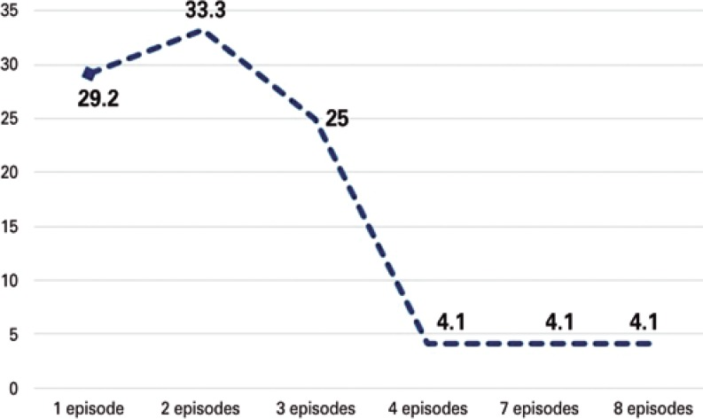
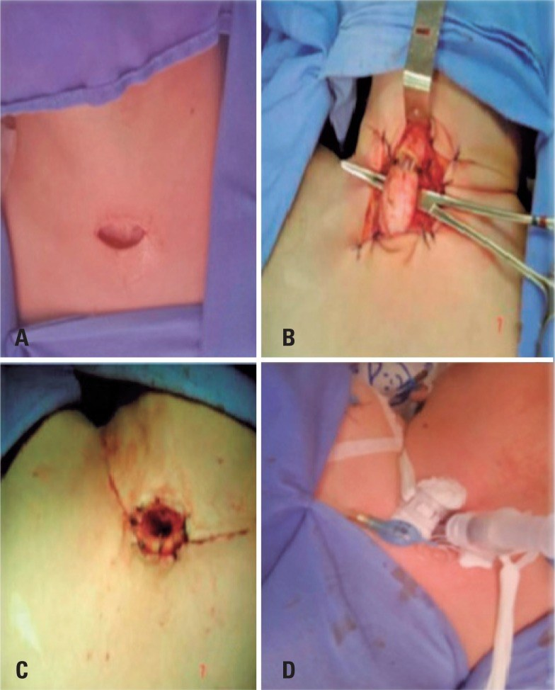
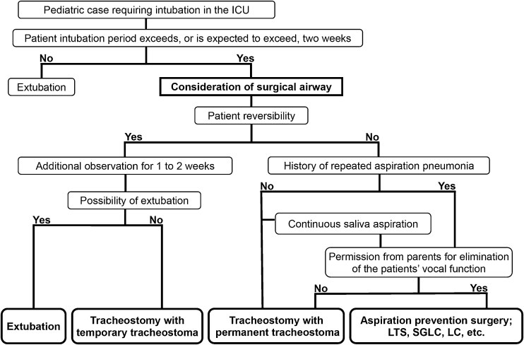
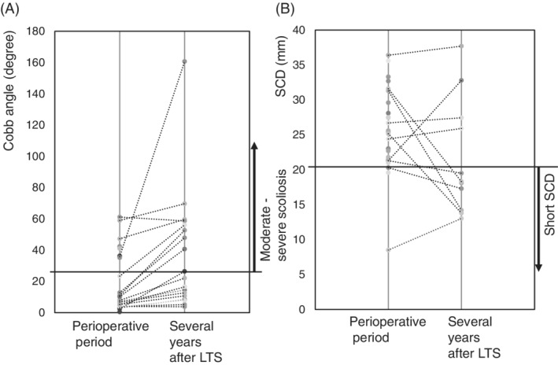

6143 — Cách ly thanh–khí quản và tiêm botulinum tuyến nước bọt ở trẻ hít sặc nước bọt nặng / Laryngotracheal separation and salivary botulinum toxin in severe salivary aspiration
Tags: pattern:hit-sac pattern:roi-loan-nuot pattern:vien-phoi-tai-dien vung:duong-tho-nhi vung:thanh-quan vung:tuyen-nuoc-bot protocol:FEES protocol:VFSS protocol:CT-co-nguc score:PAS score:DFSS
Mức chắc chắn (certainty): tổng hợp y văn (literature synthesis) — đoàn hệ 92 trẻ cách ly thanh–khí quản trong 13 năm (Einstein (São Paulo) 2019, PMCID PMC6550435); 28 trẻ theo dõi sau cách ly (Laryngoscope Investig Otolaryngol 2021, PMCID PMC8035946); 21 trẻ chọn đường thở ngoại khoa theo lưu đồ (Braz J Otorhinolaryngol 2023, PMCID PMC10372357); 220 trẻ tiêm incobotulinumtoxinA tuyến nước bọt (thử nghiệm SIPEXI, dẫn trong Toxins 2023, PMCID PMC10757066); phân tích gộp 573 trẻ bại não tiêm botulinum (Toxins 2021, PMCID PMC8700360); tổng quan hệ thống 31 nghiên cứu tiêm botulinum ở trẻ (Ann Otol Rhinol Laryngol 2023, PMCID PMC9834812). Không gắn một bệnh án đơn lẻ cho phần số liệu.
Câu hỏi thực hành: bé gái 6 tuổi, bại não thể co cứng, đã mở khí quản 14 tháng và đặt sonde dạ dày, nhập viện 4 lần/năm vì viêm phổi. VFSS bữa ăn âm tính, nhưng mỗi ngày hút 60–80 mL nước bọt, amylase dịch khí quản 8.400 U/L, và mẹ nói "nước miếng chảy ra là bé sặc". Bác sĩ hỏi: "Có phải chỉ cần tiêm botulinum tuyến nước bọt? Khi nào phải cách ly thanh–khí quản? Nếu mổ thì chọn kiểu nào, và sau mổ theo dõi gì?" Bài chốt năm quyết định: (1) hít sặc nước bọt là thực thể riêng — VFSS bữa ăn có thể âm tính, chẩn đoán dựa vào amylase dịch khí quản và lượng nước bọt phải hút; (2) botulinum chỉ làm giảm lượng nước bọt, không sửa cơ chế nuốt — hiệu quả 8–12 tuần, có thể tới 6 tháng, và không có bằng chứng trực tiếp làm giảm viêm phổi hít sặc; (3) cách ly thanh–khí quản (LTS) cắt đường đi của nước bọt vào phổi: viêm phổi 100% trước mổ → 26,1% sau mổ (p < 0,001) nhưng mất giọng nói vĩnh viễn; (4) biến chứng LTS 14,1% (rò 5,4%, chảy máu 4,3%, hẹp 3,2%, u hạt 2,2%); (5) sau LTS, rút ống được 57% nhưng 9/16 phải đặt lại ống sau 2 năm — vì cột sống vẹo tiến triển làm khoảng cách xương ức–cột sống cổ (SCD) < 20 mm, yếu tố dự báo rò khí quản–động mạch không tên (TIF).
1. Tổng quan bệnh học – cơ chế hình ảnh: vì sao "nước bọt" khó hơn "thức ăn"
- Nước bọt không có bữa ăn để dừng lại. Thức ăn đi theo từng đợt có phản xạ nuốt bảo vệ; nước bọt chảy liên tục 1–1,5 L/ngày và trẻ nằm ngửa là chảy thẳng vào thanh quản theo trọng lực. Vì thế VFSS bữa ăn âm tính không loại trừ hít sặc nước bọt — trong 11 trẻ có ống mở khí quản, amylase dịch khí quản dao động 103–115.500 U/L dù nhiều trẻ ăn qua sonde (PMC11301107, đã dẫn ở bài 6123).
- Nguồn nước bọt — chọn tuyến để tiêm: lúc đói, tuyến dưới hàm (submandibular) tiết ~70%, tuyến mang tai (parotid) ~25%, tuyến dưới lưỡi ~5% (PMC8700360). Vì vậy tiêm 2 tuyến dưới hàm đã cắt phần lớn thể tích nước bọt lúc đói, còn 4 tuyến (dưới hàm + mang tai hai bên) cắt cả phần nước bọt khi ăn.
- Botulinum tác động ở đâu: độc tố gắn đầu tận cùng thần kinh cholinergic của tuyến, được nội bào hóa rồi ức chế phóng thích acetylcholine tại khớp thần kinh–tuyến, làm giảm tiết nước bọt theo liều (PMC10757066). Thuốc không đi qua hàng rào máu não, nên không sửa được phản xạ nuốt, trương lực cơ hầu hay phối hợp đóng thanh môn — đây là lý do botulinum giảm chảy nước miếng nhưng không chắc giảm viêm phổi.
- Vì sao botulinum có tác dụng chậm và ngắn: sợi trục phải thoái hóa – tái tạo lại chỗ nối thần kinh–tuyến mới hồi phục; vì thế hiệu quả đạt đỉnh sau 1–2 tuần, kéo dài tối thiểu 8–12 tuần, có nghiên cứu tới 6 tháng; phân tích gộp khuyến nghị tiêm lại sau 3 tháng (PMC8700360). Ở trẻ, thử nghiệm SIPEXI dùng khoảng 2 U/kg, tổng liều 20–75 U và tiêm lại sau 16 tuần (PMC10757066).
- Nguyên lý của cách ly thanh–khí quản (LTS): phẫu thuật Lindeman (1976) cắt ngang khí quản ở vòng sụn thứ 2, khâu bít đầu gần (thanh quản thành túi cụt) và đưa đầu xa ra da thành lỗ mở khí quản vĩnh viễn (Hình 2). Nước bọt vẫn nuốt xuống thực quản, còn khí đi thẳng khí quản → lỗ mở da, hai đường không còn giao nhau. Vì vậy LTS loại bỏ hít sặc từ trên xuống nhưng không sửa được trào ngược dạ dày–thực quản và không cho ăn đường miệng an toàn nếu cơ nuốt còn yếu.
- Cái giá sinh lý: LTS cắt vĩnh viễn luồng khí qua thanh quản → mất giọng nói, mất phản xạ ho hiệu quả qua đường mũi, và trẻ phải thở qua lỗ mở da suốt đời. Đây là lý do đồng thuận của cha mẹ về việc "xóa chức năng thanh quản" là một bước bắt buộc trong lưu đồ chọn đường thở (PMC10372357).
- Định lượng kết quả LTS: trong 92 trẻ (tuổi trung vị 68,5 tháng, 57,6% nam), 90,2% nuôi hoàn toàn bằng sonde dạ dày và 72,4% đặt sonde trước mổ; 100% có viêm phổi trước mổ, sau mổ còn 26,1% (24/92, p < 0,001). Biến chứng hậu phẫu 14,1% (13/92): rò 5,4%, chảy máu 4,3%, hẹp 3,2%, u hạt 2,2%. Tử vong 25% — do bệnh nền, không do phẫu thuật (PMC6550435).
- Định lượng botulinum: gộp 573 trẻ bại não, tiêm botulinum vào tuyến nước bọt giảm drooling quotient với SMD −0,716 (95% CI −1,17 đến −0,263; p = 0,002) và thang tần suất–độ nặng chảy nước bọt (DFSS) SMD −0,888 (95% CI −1,49 đến −0,285; p = 0,004); liều Botox 10–120 U hoặc 2–4 U/kg (PMC8700360). Tổng quan 31 nghiên cứu ở trẻ: 50 U onabotulinumtoxinA vào 2 tuyến dưới hàm là liều an toàn – hiệu quả; 4 tuyến dùng 60–100 U tổng; tác dụng phụ hay gặp nhất là khó nuốt, gần như luôn hồi phục (PMC9834812).
- Tại sao phải đo SCD và Cobb sau LTS: lồng ngực trẻ bại não thường vẹo cột sống nặng và biến dạng lồng ngực, đẩy động mạch không tên (innominate artery) sát khí quản. Trên CT, SCD < 20 mm (khoảng cách mặt sau xương ức → mặt trước cột sống cổ) dự báo rò khí quản–động mạch không tên, biến chứng chảy máu chết người với tỉ lệ 0,1–1% ở trẻ có mở khí quản lâu dài (PMC8035946).

Hình 3 của bài gốc: số đợt viêm phổi giảm rõ sau cách ly thanh–khí quản; trong 92 trẻ, 100% có viêm phổi trước mổ và còn 26,1% sau mổ (p < 0,001). Nguồn: Einstein (São Paulo) 2019, PMCID PMC6550435, CC BY 4.0 — nguyên bản, không crop.2. Mẫu hình + chẩn đoán phân biệt theo vị trí (Gamut)
- Mẫu hình "trẻ thần kinh nặng, viêm phổi tái diễn, hút nước bọt liên tục": đây là giao điểm của mất phản xạ bảo vệ thanh quản, ứ nước bọt trong miệng/hầu, và bệnh phổi mạn do hít sặc lặp lại. Ba câu hỏi phải trả lời trước khi mổ: (1) chất gì vào phổi (nước bọt / thức ăn / dịch trào ngược); (2) cơ chế còn hồi phục không (bệnh thoái triển hay bệnh nền ổn định); (3) gia đình chấp nhận mất giọng nói không.
- Gamut theo vị trí tổn thương:
- Ổ miệng – hầu: ứ nước bọt, yếu cơ môi/lưỡi, chảy ra ngoài (drooling) hoặc ứ ở xoang lê rồi tràn xuống khi nuốt khô.
- Thanh môn: mất phản xạ đóng thanh môn, hít sặc im lặng (PAS 8), ho yếu.
- Dưới thanh môn – khí quản trên: u hạt quanh ống, sụp trên lỗ mở, hẹp — bắt chước hít sặc vì cùng biểu hiện khò khè/tụt SpO₂ (bài 6100, 3047).
- Thực quản: trào ngược dạ dày–thực quản, rò khí–thực quản — vẫn hít sặc dù đã mở khí quản; LTS không chữa trào ngược.
- Phổi: viêm phổi thùy dưới phải/thùy trên sau (phụ thuộc tư thế), xẹp phổi tái diễn, giãn phế quản sau nhiều năm.
- Gamut theo khả năng hồi phục — quyết định can thiệp:
- Còn hồi phục (bệnh cấp, sau chấn thương, đang tập nuốt): điều trị nội khoa + botulinum + tập nuốt, chưa mổ cắt đường thở.
- Không hồi phục nhưng còn sống nhiều năm (bại não, bệnh cơ, dị tật thần kinh): LTS hoặc đóng thanh quản là can thiệp giảm hít sặc triệt để, đổi lại mất giọng.
- Tiên lượng ngắn, suy đa cơ quan: chăm sóc giảm nhẹ, không mổ.
- Gamut theo kiểu đường thở ngoại khoa (lưu đồ PMC10372357): TwTT (mở khí quản + lỗ mở tạm thời, có thể cai ống), TwPT (mở khí quản + lỗ mở vĩnh viễn), APS (phẫu thuật phòng hít sặc: LTS, đóng thanh môn dưới thanh môn (SGLC), đóng thanh quản (LC)). Trong 21 trẻ: TwTT 5, TwPT 13, APS 3; 3/5 TwTT cai ống được, 2 trẻ TwPT sau đó phải chuyển APS vì viêm phổi hít sặc tái diễn.
3. Bảng so sánh phân biệt (ma trận đối chiếu)
| Thực thể (entity) | Hình ảnh / thăm dò điển hình | Chốt vào (rule-in) | Chốt loại (rule-out) | Gợi ý xác nhận |
|---|---|---|---|---|
| Hít sặc nước bọt | VFSS bữa ăn âm tính; amylase dịch khí quản cao; hút nước bọt > 30–50 mL/ngày | Amylase khí quản cao + hút nước bọt liên tục + viêm phổi tái diễn | Amylase thấp và không ứ nước bọt → tìm nguyên nhân khác | Đo amylase dịch hút; FEES đánh giá ứ nước bọt |
| Hít sặc thức ăn/chất lỏng | VFSS: baryt dưới dây thanh, PAS 6–8, rõ ở chất lỏng mức 0 | Baryt vào đường thở trong bữa ăn | VFSS bữa ăn âm tính không loại trừ hít sặc nước bọt | VFSS/FEES, thử độ đặc IDDSI |
| Trào ngược dạ dày–thực quản | Baryt trào ngược lên thực quản; pH–trở kháng; viêm phổi thùy trên sau/thùy dưới | Trào ngược thấy được + đáp ứng ức chế axit | Không trào ngược khi nuốt chuẩn | pH–trở kháng 24 giờ, thử PPI |
| Rò khí–thực quản (TEF) | VFSS/CT nằm sấp: thuốc từ thực quản → khí quản; nội soi thấy lỗ rò | Dòng thuốc thực quản → khí quản ở pha thực quản | Chỉ hít sặc từ trên xuống qua thanh môn | Nội soi + CT nằm sấp sau nuốt cản quang |
| U hạt/sụp trên lỗ mở | Nội soi: khối mô hạt hoặc thành trước lồi vào lòng; CT: hẹp lòng | Khối trong lòng/ sụp thấy trên nội soi, không đáp ứng kháng sinh | Niêm mạc nhẵn, lòng mở đều | Nội soi ống mềm (bài 6100, 6144) |
| LTS (đã mổ) | Lỗ mở da vĩnh viễn, không còn luồng khí qua miệng; X-quang/CT: đầu gần khí quản bị bít | Không khí qua mũi/miệng + lỗ mở da thở hoàn toàn | Còn khí qua thanh môn → chưa cách ly hoàn toàn | Nội soi/CT sau mổ |
| Đóng thanh môn dưới thanh môn (SGLC) | Nội soi: thanh môn còn hở nhưng dưới dây thanh bị đóng; vẫn có thể nói bằng khí qua thanh môn | Đóng dưới thanh môn + còn giọng nói | Mất hoàn toàn luồng khí → LTS/LC | Nội soi, CT |
| TwPT (mở khí quản lỗ vĩnh viễn) | Lỗ mở da vĩnh viễn, khí quản còn thông với thanh quản | Cần đường thở nhưng chưa loại trừ hít sặc | Vẫn hít sặc nước bọt → cần APS | Nội soi, đánh giá nuốt |
- Ảnh ghép đối chiếu: bài này dùng ảnh gốc riêng lẻ (không ghép) vì một nguồn là CC BY-NC-ND, không được tạo tác phẩm phái sinh.
4. Protocol chụp/thăm dò + hệ phân độ và kỹ thuật
4.1 Trước can thiệp — trả lời ba câu hỏi
- Đánh giá nuốt: VFSS (chuẩn vàng cho hít sặc trong bữa ăn, đọc PAS 1–8) và FEES (ứ nước bọt, phản xạ ho, làm tại giường); làm cả hai khi VFSS âm tính mà vẫn nghi hít sặc nước bọt. Không quyết định mổ chỉ dựa vào "mẹ thấy sặc".
- Định lượng nước bọt: đếm số lần hút/ngày, thể tích hút/ngày, và amylase dịch khí quản (so sánh nội cá thể, chưa có ngưỡng tuyệt đối chuẩn hóa).
- Đánh giá giải phẫu và nguy cơ: CT cổ–ngực (không cản quang là đủ cho SCD/Cobb) đo SCD, góc Cobb, đường kính khí quản, tìm hẹp/u hạt; nội soi đường thở nếu nghi tổn thương cấu trúc.
- Đồng thuận: giải thích rõ LTS mất giọng nói vĩnh viễn, lỗ mở da suốt đời, không ăn miệng được nếu nuốt còn yếu; ghi vào hồ sơ (lưu đồ PMC10372357 yêu cầu "permission for elimination of vocal function").
4.2 Tiêm botulinum tuyến nước bọt — liều theo cân nặng
- Chỉ định: chảy nước bọt nặng, gây hít sặc/viêm phổi tái diễn, ở trẻ ≥ 2 tuổi và ≥ 12 kg, sau khi đã đánh giá nuốt và loại trừ nguyên nhân cấu trúc.
- Liều incobotulinumtoxinA (SIPEXI, PMC10757066):
| Cân nặng | Tuyến mang tai mỗi bên | Tuyến dưới hàm mỗi bên | Tổng liều |
|---|---|---|---|
| ≥ 12 và < 15 kg | 6 U (0,24 mL) | 4 U (0,16 mL) | 20 U |
| ≥ 15 và < 19 kg | 9 U (0,36 mL) | 6 U (0,24 mL) | 30 U |
| ≥ 19 và < 23 kg | 12 U (0,48 mL) | 8 U (0,32 mL) | 40 U |
| ≥ 23 và < 27 kg | 15 U (0,60 mL) | 10 U (0,40 mL) | 50 U |
| ≥ 27 kg | 18 U (0,72 mL) | 12 U (0,48 mL) | 60 U |
| ≥ 30 kg | 22,5 U (0,90 mL) | 15 U (0,60 mL) | 75 U |
- Phân bố thể tích: 60% vào tuyến mang tai, 40% vào tuyến dưới hàm (theo SIAXI/SIPEXI); siêu âm hướng dẫn được khuyến cáo vì tuyến dưới hàm thay đổi kích thước/vị trí, dù thử nghiệm không thấy khác biệt hiệu quả khi so có/không siêu âm.
- Tiêm lại sau 16 tuần (SIPEXI); trong thực hành có thể 3 tháng nếu triệu chứng quay lại sớm. Tác dụng phụ: khó nuốt (4% ở liều 100 U người lớn; 4 trẻ trong pha mở rộng SIPEXI), khô miệng, yếu cơ nhai; không dùng nếu đã có khó nuốt nặng chưa đánh giá.
- Điểm cần nói với gia đình: botulinum giảm chảy nước miếng, nhưng chưa có bằng chứng trực tiếp giảm viêm phổi hít sặc (PMC13423959) — vì vậy nó là bắc cầu/giảm nhẹ, không thay thế LTS khi hít sặc nặng tái diễn.
4.3 Cách ly thanh–khí quản — kỹ thuật và theo dõi
- Kỹ thuật (Lindeman cải biên 1976): rạch 2 cm trên hõm ức, bộc lộ khí quản; cắt ngang ở vòng sụn thứ 2; khâu bít đầu gần (thanh quản); đưa đầu xa ra da và khâu cố định; đặt ống mở khí quản ngắn trong vài tuần đầu.
- Sau mổ: theo dõi chảy máu (dấu hiệu báo trước TIF), rò da–khí quản, hẹp lỗ mở, u hạt; hút nước bọt qua miệng vẫn cần vì nước bọt vẫn tiết ra (LTS không làm hết tiết nước bọt).
- Rút ống: 57% (16/28) rút được sớm sau LTS, nhưng 9 trẻ phải đặt lại ống sau 2 năm vì sụp/hẹp khí quản tiến triển; 7 trẻ có biến dạng khí quản tiến triển trên CT lần 2. Vì vậy theo dõi CT dài hạn là bắt buộc, không phải "mổ xong là xong" (PMC8035946).
- Ngưỡng cảnh báo TIF: SCD < 20 mm trên CT → không nên quản lý không ống nếu ống cần làm nẹp; chảy máu lỗ mở bất kỳ ở trẻ có SCD ngắn = cấp cứu, chụp CTA/soi mạch, không chờ.
- Lưu đồ chọn đường thở (PMC10372357): xét khả năng cai ống, thời gian đặt ống, khả năng hồi phục, tiền sử viêm phổi hít sặc/ứ nước bọt, và đồng ý xóa chức năng thanh quản; từ đó chọn TwTT → TwPT → APS (LTS/SGLC/LC).
flowchart TD
A[Trẻ thần kinh nặng, viêm phổi tái diễn, hút nước bọt nhiều] --> B[VFSS + FEES + amylase dịch khí quản]
B --> C{Chất vào phổi là gì?}
C -->|Thức ăn/chất lỏng| D[Chỉnh độ đặc + tập nuốt; điều trị nguyên nhân]
C -->|Nước bọt liên tục| E{Cơ chế còn hồi phục?}
E -->|Có| F[Botulinum tuyến nước bọt + tập nuốt + theo dõi 16 tuần]
E -->|Không, còn sống nhiều năm| G[CT cổ-ngực: SCD, Cobb, đường kính khí quản]
G --> H{Gia đình đồng ý mất giọng nói?}
H -->|Không| I[TwPT + hút nước bọt + điều trị hỗ trợ]
H -->|Có| J[LTS hoặc đóng thanh môn]
J --> K[Theo dõi: chảy máu, hẹp, u hạt, CT 6-12 tháng]
K --> L{SCD < 20 mm hoặc sụp tiến triển?}
L -->|Có| M[Giữ ống làm nẹp; CTA nếu chảy máu]
L -->|Không| N[Thử quản lý không ống + CT lặp]
D --> O[Đánh giá lại sau 3-6 tháng]
F --> O

Hình 2 của bài gốc: (A) đường rạch 2 cm trên hõm ức; (B) cắt khí quản ở vòng sụn thứ 2 và khâu bít đầu gần; (C) đưa đầu xa ra da; (D) kết quả cuối. Nguồn: Einstein (São Paulo) 2019, PMCID PMC6550435, CC BY 4.0 — nguyên bản, không crop.
Hình 1 của bài gốc: lưu đồ chọn đường thở ở trẻ thần kinh nặng đặt nội khí quản kéo dài — TwTT, TwPT, hoặc phẫu thuật phòng hít sặc (LTS/SGLC/LC). Nguồn: Braz J Otorhinolaryngol 2023, PMCID PMC10372357, CC BY 4.0 — nguyên bản, không crop.5. Biến thể bình thường và cạm bẫy
- Cạm bẫy 1 — "VFSS âm tính nên không hít sặc": VFSS chỉ đánh giá bữa ăn; hít sặc nước bọt xảy ra giữa các bữa. Phải đo amylase dịch khí quản và đếm lượng nước bọt phải hút trước khi kết luận.
- Cạm bẫy 2 — "tiêm botulinum là đủ": botulinum giảm lượng nước bọt, nhưng không sửa phản xạ nuốt; ở trẻ đã có viêm phổi nặng tái diễn, tiêm đơn thuần có thể trì hoãn LTS trong khi phổi tiếp tục bị tổn thương. Ngược lại, LTS quá sớm ở trẻ còn hồi phục là mất giọng nói vĩnh viễn oan.
- Cạm bẫy 3 — bỏ sót TIF: SCD < 20 mm + chảy máu lỗ mở = dấu hiệu báo trước của rò khí quản–động mạch không tên (tỉ lệ 0,1–1%, tử vong nhanh). Không được hút mạnh/thay ống mù ở trẻ đang chảy máu; cần CTA/soi mạch cấp cứu.
- Cạm bẫy 4 — "LTS chữa luôn trào ngược": LTS tách đường khí – đường tiêu hóa, nhưng trào ngược vẫn vào thực quản; nếu trẻ còn nôn/trào ngược nhiều, vẫn có thể hít sặc qua lỗ mở da khi nằm ngửa hoặc khi dịch trào lên hầu. Cần điều trị trào ngược và tư thế.
- Cạm bẫy 5 — u hạt/sụp giả "hít sặc": trẻ LTS vẫn có thể khò khè, tụt SpO₂ do u hạt quanh lỗ mở hoặc sụp khí quản, không phải do hít sặc; nội soi định kỳ phân biệt (bài 6100, 6144).
- Biến thể bình thường: trẻ chảy nước bọt sinh lý tới 4 tuổi (PMC10757066) — không tiêm botulinum cho trẻ < 4 tuổi chỉ vì chảy nước miếng; phải có hít sặc/viêm phổi hoặc ảnh hưởng chất lượng sống nặng.
6. Tự lượng giá — Blind Quiz
Ca 1 — Bé trai 5 tuổi, bại não, mở khí quản 2 năm, 5 đợt viêm phổi/năm.
- Gợi ý: VFSS bữa ăn âm tính; amylase dịch khí quản 12.000 U/L; mẹ hút nước bọt 50–70 mL/ngày.
- Câu hỏi: Đây là hít sặc gì? Hai lựa chọn can thiệp và tiêu chí chọn?
Bấm để hiện đáp án
- Hít sặc nước bọt — VFSS bữa ăn âm tính nhưng amylase khí quản cao và lượng nước bọt phải hút lớn.
- Botulinum tuyến nước bọt nếu còn khả năng hồi phục/đang chờ đánh giá; LTS nếu hít sặc nặng tái diễn, bệnh nền không hồi phục và gia đình đồng ý mất giọng nói. Trong đoàn hệ 92 trẻ, viêm phổi giảm 100% → 26,1% sau LTS (p < 0,001).
- Nguồn ảnh: Einstein (São Paulo) 2019, PMCID PMC6550435, CC BY 4.0.
Ca 2 — Bé gái 12 tuổi sau LTS 3 năm, khò khè tăng dần, không sốt.

- Gợi ý: Trẻ bại não, vẹo cột sống nặng, đang thở không ống.
- Câu hỏi: Hai biến chứng muộn nào cần tìm? Ngưỡng nào buộc phải đặt lại ống?
Bấm để hiện đáp án
- Sụp/hẹp khí quản tiến triển và rò khí quản–động mạch không tên (TIF); đo Cobb và SCD trên CT. SCD < 20 mm dự báo TIF và là lý do giữ ống làm nẹp; 9/16 trẻ rút ống được đã phải đặt lại sau 2 năm.
- Nguồn ảnh: Laryngoscope Investig Otolaryngol 2021, PMCID PMC8035946, CC BY-NC-ND 4.0 — nguyên bản, không crop/ghép.
Ca 3 — Bé trai 2 tuổi, hít sặc nước bọt nặng, bệnh nền không hồi phục, bố mẹ chưa đồng ý mất giọng nói.
- Câu hỏi: Chọn TwTT, TwPT hay APS? Vì sao?
Bấm để hiện đáp án
- TwPT (mở khí quản lỗ vĩnh viễn) khi chưa đồng ý xóa chức năng thanh quản; APS/LTS chỉ đặt khi đã đồng thuận mất giọng nói. Trong 21 trẻ của lưu đồ: TwPT 13, TwTT 5, APS 3; 2 trẻ TwPT sau đó vẫn phải chuyển APS vì viêm phổi tái diễn.
- Nguồn ảnh: Braz J Otorhinolaryngol 2023, PMCID PMC10372357, CC BY 4.0.
Bài liên quan chéo
- 6123 – Rối loạn nuốt và hít sặc ở trẻ có ống mở khí quản
- 6100 – Chăm sóc, biến chứng và cai ống mở khí quản
- 6144 – Nội soi thanh–khí quản định kỳ ở trẻ có ống mở khí quản
- 082 – Bài não an toàn nuốt (PAS/FOIS/IDDSI)
- 600 – Tổng quan Hệ Nhi khoa
Không dùng để chẩn đoán độc lập khi chưa có người hướng dẫn.